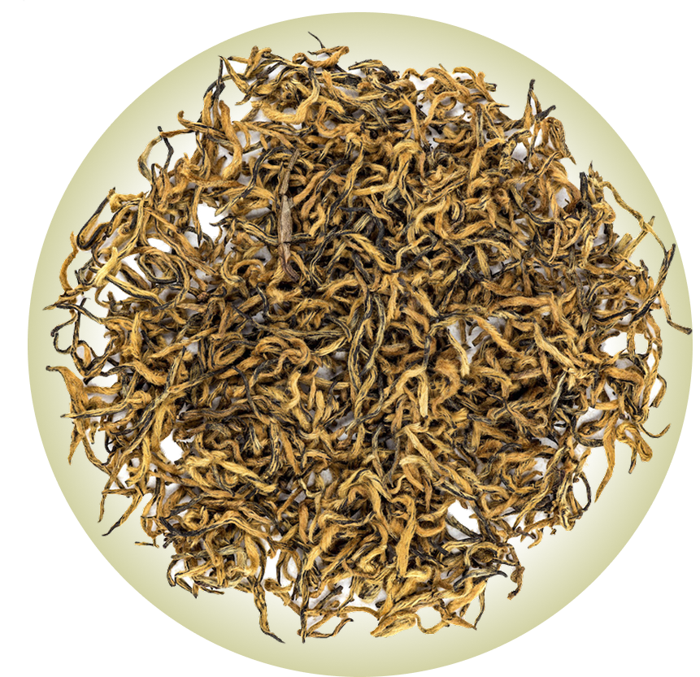

Этот красный чай происходит из области Уи провинции Фуцзянь. В июле 2005-го года гендиректор компании Уи Чжэн Шань, господин Цзян Юань Сюнь сопровождал гостей из Пекина в горы Уи. Во время прогулки на высоте 1800 метров над уровнем моря на территории Национального парка Уи они нашли нежные побеги чая. Гости предложили сделать из этих почек чай. Собранный материал был послан в деревню Тунму, где более чем триста лет назад появился знаменитый чай Чжэнь Шань Сяо Чжун (Лапсанг Сушонг). Там под личным руководством чайного мастера Лян Цзюнь Дэ, который унаследовал методы производства чая от своих предков и достиг не только большого мастерства в процессах окисления, сушки, обжига и т.д., но не остановился на достигнутом, а пошёл дальше. На основе методов производства чая Лапсанг Сушонг он провёл эксперимент: к традиционным для Лапсанг Сушонг технологиям брожения был добавлен усовершенствованный процесс ферментации. В результате получился абсолютно новый чай, и его назвали Цзинь Цзюнь Мэй.
Заваривать горячей водой (95°С) в фарфоровой гайвани или чайнике из пористой глины. Пропорция заварки к воде: 5 г на 100 мл. Первый раз настоять 6–8 секунд, после чего пить проливом с постепенным увеличением экспозиции. Выдерживает 7 завариваний. Хорошо раскрывается в варке.
